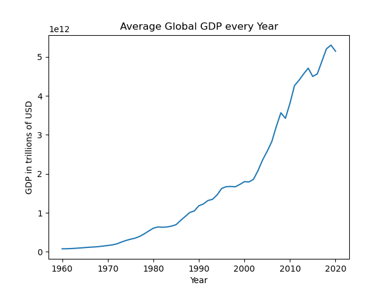

Main Page
Traditionally, it has always been believed that GDP growth is good, and it is! It's the number which matters when it comes to tracking the size and growth of an economy, but it's not the full story.
This is best explained if we take a look at the graphs of inflation and GDP put next to each other.

Here we have a graph of the average GDP in trillions of USD of all the countries in the world from the years 1960 to 2020. Although there are probably better examples to show, we can see that on this graph, the GDP is steadily increasing, growing from 1 trillion in 1990 to over 5 trillion in 2020.
This seems to be very good, and you would think that this requires quite a high growth rate, something like 10% or something like that.
But now let's take a look at this graph. We can see that it is maybe about 7%. But the reason for that is the data is taken from all the countries in the world, including those developing countries which have massive GDP growth rate. If we take those out of account, the growth rates are most likely more like 4 or 5%. And the reason for a low growth rate still resulting in a high GDP is the same logic as compound interest.
Let's say you start off with a hundred pounds, and have a 2% compound interest. In the first year, you gain 2 pounds. But in the twentieth year, you gain 2.91, and in the fiftieth, you gain 5.28
Now if we apply this to massive sums of money such as a billion pounds, you're gaining 29 million pounds in just the twentieth year, and that's with just 2%. So it's fine to have 4% or 5%, as you will still have massive growth.
But now let's take a look at inflation rates in the same period. This graph displays the average global inflation rates from 1970-2020. What exactly this is showing is not apparent at first glance, as this was made taking the raw data, which I will be providing a link to in the appendix, but there seems to be an outlier at around 2018, so I will provide a slightly better one below.
Here is the same graph, except with the top 20% of results removed from the graph. This is needed, because as you look at the previous graph, you can see that Now we can see that the inflation rate, once we remove the outliers is still quite volatile, ranging from around 6% to 36%. As you can see from the red line, which is the mean, the average inflation was around 12%, which is
This kind of stable growth is what we are aspiring for and would like to maintain.
What this means is that having a relatively constant level of inflation is essential and probably most efficient for maintaining steady GDP growth: inflation by definition is an increase in the price level of goods and services in a country, and GDP is the total value of goods and services provided by a country in one year.
Appendix
Link To GDP dataset
 Link to Inflation dataset
Link to Inflation dataset
Last modified: 2023
My website © 2023 a Website by Zong Li is licensed under CC BY-SA 4.0


Gdp icons created by ultimatearm - Flaticon
Inflation icons created by IconMarketPK - Flaticon
In the same generous spirit of Tamara Munzner
,Laurence Warner - and all those other pioneers in the decade of my birth who dreamed that websites could foster human communication, creativity & collaboration - to whom it pays homage.
"Nanos Gigantum Humeris Insidentes"